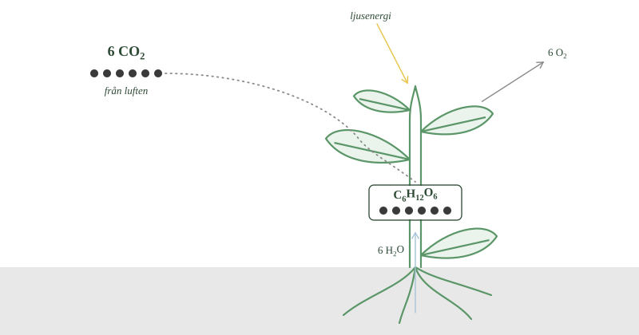
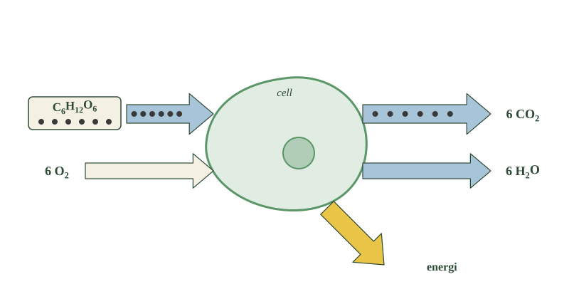
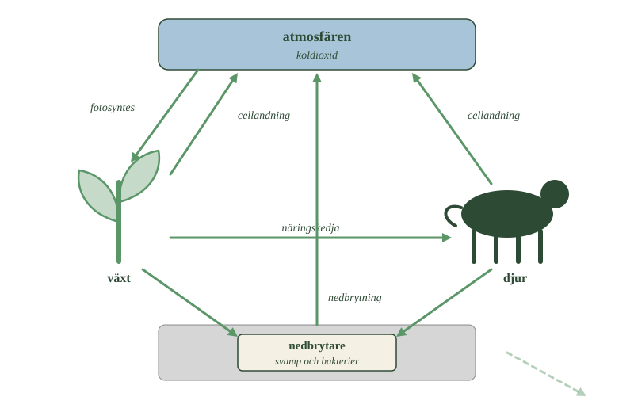

- Varifrån hämtar växten sina två råvaror?
- Vilken roll spelar solljuset?
- Vad bildas vid fotosyntesen förutom druvsocker?
- Hur många kolatomer finns på vardera sidan av reaktionen?
- Hur förs kolet vidare från växten till djuren?
Kol finns inte bara bundet i sten och material. Det rör sig hela tiden mellan luften och det levande. Växter tar upp kol ur luften, kolet förs vidare när djur äter, och till slut kommer det tillbaka till luften. Två processer sköter den rörelsen: fotosyntesen och cellandningen.
Växten hämtar två råvaror från två håll
Luften omkring oss innehåller koldioxid, \(\ce{CO2}\). Det är inte mycket — ungefär fyra molekyler av tiotusen — men det räcker.
Varje koldioxidmolekyl innehåller en kolatom. Det är den kolatomen som allt handlar om.
Växten tar in koldioxid genom små öppningar på bladens undersida. Öppningarna kallas klyvöppningar och kan öppnas och stängas.
Samtidigt tar växtens rötter upp vatten ur marken. Vattnet transporteras upp genom stammen till bladen.
Nu har växten sina två råvaror: koldioxid från luften och vatten från marken.
Solljuset driver reaktionen
Koldioxid och vatten reagerar inte med varandra av sig själva. Det behövs energi.
Den energin kommer från solljuset. Med hjälp av ljusenergin kan växten bygga ihop koldioxid och vatten till druvsocker, som också kallas glukos. Samtidigt bildas syrgas.
Så här kan man skriva det:
koldioxid + vatten + ljusenergi \(\rightarrow\) druvsocker + syrgas
Med kemiska formler:
Läs formeln långsamt. Till vänster står sex koldioxidmolekyler. Varje sådan har en kolatom, alltså sex kolatomer totalt. Till höger står en glukosmolekyl, \(\ce{C6H12O6}\), som innehåller sex kolatomer.
Sex in, sex ut. Inga kolatomer försvinner. De har bara flyttat.
- Följ de mörka prickarna från pilen in i bladet. Var hamnar de?
- Vad kommer in från marken, och vad kommer in från luften?
- Många tror att en trädstam är byggd av ämnen från jorden. Vad i bilden säger något annat?

Kolet i växten kommer från luften
Här finns något som lätt blir fel. Många tror att ett träd är byggt av ämnen som rötterna hämtat ur jorden.
Så är det inte. Nästan allt kol i en trädstam kommer från luften, genom bladen. Ett stort träd har alltså till stor del byggts av koldioxid.
Kolet förs vidare i näringskedjan
Växten kan använda glukosen som energi direkt. Men den kan också bygga om glukosen till andra ämnen: stärkelse, cellulosa, fett och proteiner.
Kolatomerna hamnar då i bladen, stammen, rötterna, fröna och frukterna.
När ett djur äter växten följer kolatomerna med in i djuret. Äter sedan ett annat djur upp det djuret följer kolet med ännu ett steg.
Fotosyntesen är alltså den väg som kolet tar från luften in i allt levande.
- Varifrån hämtar växten sina två råvaror?
- Vilken roll spelar solljuset?
- Vad bildas vid fotosyntesen förutom druvsocker?
- Hur många kolatomer finns på vardera sidan av reaktionen?
- Hur förs kolet vidare från växten till djuren?
Kol finns inte bara bundet i bergarter, bränslen och olika material. Det rör sig också hela tiden mellan atmosfären och levande organismer. Växter tar upp kol ur luften, kolet förs vidare genom näringskedjor och återvänder så småningom till atmosfären.
Två processer är särskilt viktiga för denna rörelse: fotosyntesen och cellandningen. Genom fotosyntesen byggs energirika organiska ämnen upp. Genom cellandningen bryts de ner igen.
Växten hämtar koldioxid ur luften och vatten ur marken
Luften omkring oss innehåller koldioxid, \(\ce{CO2}\). Varje koldioxidmolekyl innehåller en kolatom. Växter tar upp koldioxid genom små öppningar i bladen, som kallas klyvöppningar. Samtidigt tar växtens rötter upp vatten ur marken. Koldioxiden och vattnet är växtens råvaror. Det betyder att kolet i en växt kommer från luften, inte från jorden.
Solljusets energi gör att druvsocker kan bildas
Med hjälp av energi från solljuset kan växten använda koldioxid och vatten för att bygga druvsocker, glukos. Vid reaktionen bildas också syrgas.
Fotosyntesen kan sammanfattas:
koldioxid + vatten + ljusenergi \(\rightarrow\) druvsocker + syrgas
Med kemiska formler skrivs reaktionen:
Räkna kolatomerna: sex koldioxidmolekyler innehåller sex kolatomer, och glukosmolekylen innehåller också sex. Inga kolatomer försvinner på vägen.
Kolet från luften byggs in i växten och förs vidare
Kolatomer som först fanns i luftens koldioxid sitter nu i glukosmolekyler. Kolet har alltså förflyttats från atmosfären till ett organiskt ämne.
Växten kan använda glukosen direkt som energikälla, men också bygga om den till andra organiska ämnen. Kolatomerna kan hamna i exempelvis stärkelse, cellulosa, fett och proteiner. På så sätt blir kolet en del av växtens blad, stam, rötter, frön och frukter.
När ett djur äter en växt förs kolatomerna vidare till djuret. När ett djur äter ett annat djur kan kolet föras vidare ännu en gång. Fotosyntesen är därför den viktigaste vägen för kol från atmosfären in i levande organismer och näringskedjor.
---
Syret kommer från vattnet, inte från koldioxiden
Standardtexten skriver fotosyntesen som en enda reaktion:
Det är korrekt som bokföring — atomerna stämmer på båda sidor. Men formeln säger ingenting om vad som faktiskt händer, och den inbjuder till en felaktig slutsats.
Läser man formeln naivt ser det ut som att koldioxiden delas: kolet blir socker och syret blir syrgas. Det är inte vad som sker. Syrgasen kommer från vattenmolekylerna.
Det går att visa experimentellt. Om man ger en växt vatten där syreatomerna är av en tyngre sort än vanligt dyker de tyngre atomerna upp i syrgasen som växten avger. Ger man i stället tyngre syre i koldioxiden hamnar det i sockret, inte i syrgasen.
Anledningen är att fotosyntesen består av två skeden. I det första används ljusenergin till att slita isär vattenmolekyler. Syret därifrån blir över och avges som syrgas. Det som tas till vara är elektronerna och energin.
I det andra skedet används den energin till att bygga in koldioxidens kolatomer i en sockermolekyl. Det skedet behöver inget ljus alls — det behöver bara energin från det första.
Sammanlagt rör det sig om tiotals delreaktioner, var och en med sitt eget enzym.
Om modellen. Sammanfattningsformeln är inte fel, den är en summering. Den visar vad som går in och vad som kommer ut, och den duger utmärkt för att följa kolatomerna — vilket är precis vad avsnittet ska göra. Men en summering kan inte visa vägen. Vill man veta varifrån syret kommer måste man öppna de två skedena.
- Vad behöver cellerna energin till?
- Vilka två ämnen reagerar med varandra vid cellandningen?
- Varifrån kommer den energi som frigörs?
- Var hamnar glukosmolekylens sex kolatomer?
- Vilka organismer har cellandning?
Alla celler behöver energi
Levande celler behöver energi hela tiden.
En växt behöver energi för att växa, flytta ämnen inom sig och bygga nya celler. Ett djur behöver energi till att röra sig, hålla värmen och få cellerna att fungera.
Energin finns lagrad i glukosmolekylen. Frågan är hur cellen får ut den.
Glukos reagerar med syrgas
Svaret är cellandningen.
Vid cellandningen reagerar glukos med syrgas. Glukosmolekylen bryts ner, och det bildas koldioxid och vatten.
druvsocker + syrgas \(\rightarrow\) koldioxid + vatten + energi
Med kemiska formler:
\(\ce{C6H12O6}\) + 6 \(\ce{O2}\) \(\rightarrow\) 6 \(\ce{CO2}\) + 6 \(\ce{H2O}\) + energi
- Följ de mörka prickarna genom cellen. Var hamnar de den här gången?
- Jämför pilarna med förra bilden. Vilka pilar har bytt riktning?
- Energipilen pekar ut ur cellen. Varifrån kom den energin från början?

Energin skapas inte, den frigörs
Det är lätt att tro att cellandningen tillverkar energi. Det gör den inte.
Energin fanns redan där, lagrad inuti glukosmolekylen. När molekylen bryts ner och nya ämnen bildas kan en del av den energin frigöras och användas.
Och varifrån kom energin från början? Från solen. Det var solljuset som en gång tillförde energin när växten byggde glukosen.
Energin i din kropp just nu är alltså solenergi som tagit en omväg.
Kolatomerna går tillbaka till luften
Följ kolatomerna igen. Glukosmolekylen innehöll sex kolatomer. Efter cellandningen sitter de sex kolatomerna i sex koldioxidmolekyler.
Koldioxiden andas ut, och kolet är tillbaka i luften.
Både växter och djur har cellandning
Här gör många fel. Man tror att växter har fotosyntes och djur har cellandning, som om de delade upp arbetet mellan sig.
Så är det inte. Växter har både fotosyntes och cellandning. Fotosyntesen bygger upp glukosen, och cellandningen gör att växtens egna celler kan använda energin i den.
Även döda organismer lämnar tillbaka sitt kol
När en växt eller ett djur dör finns kolet kvar i kroppen.
Då tar nedbrytarna vid — framför allt bakterier och svampar. De bryter ner det döda materialet och använder energin i det. Även de har cellandning, och även de avger koldioxid.
Så återvänder kolet från döda organismer till luften.
- Vad behöver cellerna energin till?
- Vilka två ämnen reagerar med varandra vid cellandningen?
- Varifrån kommer den energi som frigörs?
- Var hamnar glukosmolekylens sex kolatomer?
- Vilka organismer har cellandning?
Cellerna behöver energi och får den ur glukosen
Levande celler behöver energi. Växter behöver energi för att växa, transportera ämnen och bygga nya celler. Djur behöver energi till rörelse, kroppsvärme och cellernas arbete.
Energin kan frigöras genom cellandningen. Vid cellandningen reagerar glukos med syrgas. Glukosmolekylen bryts ner och det bildas koldioxid och vatten.
Cellandningen kan sammanfattas:
druvsocker + syrgas \(\rightarrow\) koldioxid + vatten + energi
Med kemiska formler skrivs reaktionen:
\(\ce{C6H12O6}\) + 6 \(\ce{O2}\) \(\rightarrow\) 6 \(\ce{CO2}\) + 6 \(\ce{H2O}\) + energi
Energin skapas inte i cellandningen, den frigörs
Energin fanns lagrad som kemisk energi i glukosmolekylen. När glukosen reagerar med syrgas och nya ämnen bildas kan en del av denna energi frigöras och användas av cellen. Det var solljuset som en gång tillförde energin, vid fotosyntesen.
Samtidigt händer något viktigt med kolatomerna. De sex kolatomer som fanns i glukosmolekylen hamnar i sex koldioxidmolekyler. Kolet kan därefter återvända till atmosfären.
Både växter och djur har cellandning
Det är alltså fel att tänka att växter bara utför fotosyntes medan djur utför cellandning. Växter utför båda. Fotosyntesen bygger upp energirika organiska ämnen, medan cellandningen gör att växtens celler kan använda den energi som finns lagrad i dem.
När organismer dör finns mycket av deras kol fortfarande kvar i kroppen. Nedbrytare, framför allt bakterier och svampar, bryter då ner det organiska materialet. Även de har cellandning och avger därför koldioxid. På så sätt återförs kol från döda organismer till atmosfären.
---
Energin kommer inte i ett svep
Standardtexten säger att cellandningen frigör energi som cellen kan använda. Det stämmer, men formuleringen döljer ett problem som cellen måste lösa.
En glukosmolekyl innehåller mycket energi. Skulle den frigöras på en gång, som när socker brinner i en låga, blev det mest värme — och en cell som får all sin energi som en plötslig värmepuls skadas i stället för att fungera.
Cellen bryter därför ner glukosen i många små steg. Vid varje steg frigörs en liten del av energin, och den fångas upp direkt.
Det som fångar upp den är en molekyl som heter ATP. Man kan se ATP som cellens uppladdningsbara batteri. Energin från nedbrytningen laddar ATP, och när cellen ska göra något — dra ihop en muskel, bygga ett protein, flytta ett ämne genom ett cellmembran — används ATP.
En glukosmolekyl räcker till ungefär 30 ATP-molekyler.
Syrgasens roll är dessutom inte den man gissar. Syret deltar inte i början, när glukosen börjar brytas ner, utan allra sist. Det tar emot elektronerna i slutet av kedjan och blir vatten. Utan syre stannar hela kedjan upp, och därför dör celler som inte får syre — inte för att glukosen tar slut, utan för att det saknas något att lämna elektronerna till.
Om modellen. Standardnivåns formel stämmer i sin bokföring: glukos och syre in, koldioxid och vatten ut. Ordet "energi" på högerkanten är däremot ingen produkt, utan en påminnelse. I cellen finns aldrig någon lös energi — det finns laddade ATP-molekyler, och de tillverkas stegvis.
- Vad är råvaror och vad är produkter i de två processerna?
- Varför kallas de för motsatta processer?
- Vad menas med kolets kretslopp?
- På vilket sätt är de två processerna ändå inte varandras spegelbilder?
- När är kretsloppet i balans?
Det ena bygger upp, det andra bryter ner
Ställ de två processerna bredvid varandra.
Fotosyntesen tar koldioxid och vatten och bygger glukos och syrgas. Den behöver energi från solljuset.
Cellandningen tar glukos och syrgas och bildar koldioxid och vatten. Den frigör energi.
Titta på orden. Det som är råvaror i den ena processen är produkter i den andra, och tvärtom. Därför kallas de motsatta processer.
Tillsammans blir de ett kretslopp
Eftersom de två processerna hakar i varandra kan samma kolatomer användas om och om igen.
En kolatom sitter i luftens koldioxid. Fotosyntesen för in den i en glukosmolekyl i ett blad. Ett djur äter bladet, och kolatomen hamnar i djurets kropp. Djurets cellandning bryter ner sockret, och kolatomen hamnar i en koldioxidmolekyl som andas ut.
Nu är kolatomen tillbaka där den började, redo att tas upp av en växt igen.
Det här kallas kolets kretslopp.
- Följ en kolatom hela varvet runt. Hur många pilar passerar du?
- Vilka pilar går uppåt, mot atmosfären? Vad har de gemensamt?
- Den bleka pilen har ingen text. Vart tror du kolet tar vägen där?

Processerna är ändå inte varandras spegelbilder
En sak är värd att notera. Fotosyntesen behöver ljus och sker bara i gröna växtdelar. Den stannar av på natten.
Cellandningen pågår hela tiden, i varje cell, dygnet runt. En växt andas alltså även när det är mörkt.
De är motsatser i vad de gör med ämnena, men de körs inte lika ofta.
Kretsloppet kan vara i balans
Så länge ungefär lika mycket kol tas upp ur luften som lämnas tillbaka är kretsloppet i balans. Mängden koldioxid i luften håller sig då ungefär lika stor.
Hur länge en enskild kolatom är borta från luften varierar mycket. Sitter den i ett löv kan den vara tillbaka inom ett år. Sitter den i en trädstam kan den bli kvar i hundra år.
Men allt kol går inte runt så här. En del kol lämnar det snabba kretsloppet och blir liggande i mycket lång tid. Hur det går till, och vad som händer när det kolet kommer tillbaka, ska vi undersöka längre fram.
- Vad är råvaror och vad är produkter i de två processerna?
- Varför kallas de för motsatta processer?
- Vad menas med kolets kretslopp?
- På vilket sätt är de två processerna ändå inte varandras spegelbilder?
- När är kretsloppet i balans?
Produkterna i den ena processen är råvaror i den andra
Vid fotosyntesen används koldioxid och vatten för att bygga glukos och syrgas. Energi från solljuset måste tillföras. Vid cellandningen används glukos och syrgas, och det bildas koldioxid och vatten. Samtidigt frigörs energi som cellerna kan använda.
Produkterna från den ena processen är alltså råvaror i den andra. Därför kan fotosyntesen och cellandningen beskrivas som motsatta processer.
Tillsammans bildar processerna kolets kretslopp
Genom dessa båda processer rör sig kol hela tiden mellan atmosfären och levande organismer. Växterna tar upp koldioxid och bygger in kolet i organiska ämnen. Kolet förs vidare genom näringskedjor och kan sedan återföras till atmosfären genom cellandning och nedbrytning.
Detta är en viktig del av kolets kretslopp.
Processerna är ändå inte varandras spegelbilder i allt. Fotosyntesen kräver ljus och sker bara i gröna växtdelar, medan cellandningen pågår i alla celler dygnet runt.
Kretsloppet är i balans så länge upptag och återföring är lika stora
Kretsloppet är i balans så länge ungefär lika mycket kol tas upp från atmosfären som återförs till den. Hur länge en enskild kolatom stannar utanför luften varierar mycket: den kan vara tillbaka inom ett år om den sitter i ett löv, men stanna i hundra år i en trädstam.
Men allt kol cirkulerar inte snabbt mellan luften och det levande. En del kol lämnar det snabba kretsloppet och lagras under mycket lång tid. Hur det sker, och vad som händer när detta kol återförs till atmosfären, kommer vi att undersöka längre fram.
Kolet går runt, men energin gör det inte
Standardtexten kallar fotosyntes och cellandning för motsatta processer och visar att de tillsammans bildar ett kretslopp. Det gäller för kolatomerna. För energin gäller något annat.
Följ de två formlerna igen. Kolatomerna som lämnar luften kommer tillbaka till luften. Samma atomer, om och om igen, i det oändliga.
Energin gör inte det. Solljus kommer in i systemet, en del av det lagras i glukos, och vid varje steg därefter går en del förlorad som värme. Värmen strålar ut i rymden och kommer aldrig tillbaka.
Det syns tydligt i en näringskedja. Av energin i en växt hamnar bara omkring en tiondel i djuret som äter den. Resten har blivit värme. Därför kan näringskedjor inte vara hur långa som helst.
Energin flödar alltså rakt igenom systemet, från solen till rymden. Materia cirkulerar, energi passerar. Det är en av ekologins mest grundläggande regler, och den gäller inte bara kol utan varje grundämne som ingår i levande material.
Det förklarar också varför jorden behöver solen kontinuerligt. Om solen slocknade skulle kolatomerna finnas kvar precis som förut — men ingenting skulle kunna drivas med dem.
Om modellen. Standardnivån skriver energi i båda reaktionsformlerna, som om den gick åt det ena hållet och tillbaka igen. Det är en bekväm symmetri, och den gör formlerna lätta att jämföra. Men energin tar aldrig samma väg tillbaka. Kretsloppet är ett kretslopp för materia — aldrig för energi.
Laddar övningskort…
Laddar frågor ...